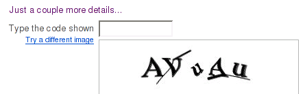

Yahoo CAPTCHA is broken
According to the hmm… press-release (formally, it’s a blog entry, but the style is very press-releasish), the Yahoo CAPTCHA is broken.

According to many specialists, this is a hard CAPTCHA for machine recognition. Anyway, the developers (they call themselves “Network Security Research and AI group”) designed a system with the recognition rate about 35%.
They don’t reveal the algorithm. The only detail is that the tool uses uses MATLAB 2007a Compiler Runtime.
The code is freely available for download.
The developers notified Yahoo, but haven’t got a reply so far.
March 20th, 2008 at 10:16 pm
Something tells me Yahoo! is working on this,It’s easy to bypass the captcha once you know the code of it, Yahoo! needs to make a new code without sharing it. and also add alot of new things to it as well.
January 25th, 2010 at 12:54 pm
This captcha is upsetting me on Yahoo! mail. Every time I try to send an email it comes up. I put in the letters and numbers as it shows and it locks me out of the system for 24 hours. I have given feedback to Yahoo twice now on this issue. I have talked to others and it seems no one else is having this issue. It has gotten so bad that I had to creat an email through google. If anyone has some ideas of how to get rid of this captcha crap I would definitely be inclined to listen.